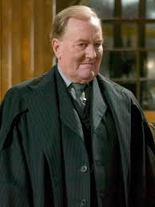
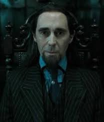
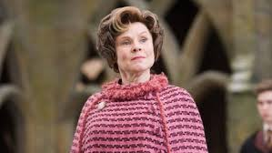
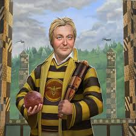
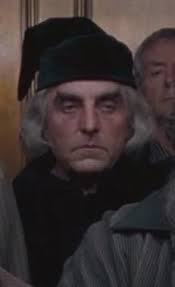
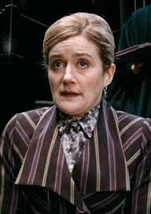
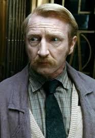
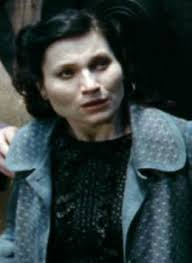

LAW AND ARCHIVES
Located deep beneath London, the Ministry of Magic regulates every aspect of wizarding life. From the Department of Mysteries to the Auror Office, its officials strive to preserve the Statute of Secrecy, administer justice, and maintain order in the magical world, though not without bureaucracy and vulnerability to corruption.
CHARACTERS OF THE GROUP

CORNELIUS FUDGE
Minister for Magic who refused to believe Voldemort had returned. Pompous and paranoid.
RUFUS SCRIMGEOUR
Battle-hardened successor to Fudge. Tortured and killed by Voldemort for protecting Harry.

PIUS THICKNESSE
Pius Thicknesse became Minister under Voldemort’s control. He was placed under the Imperius Curse. Thicknesse enforced anti-Muggle laws. He was freed after Voldemort’s defeat.
DOLORES UMBRIDGE
Sadistic Senior Undersecretary. Obsessed with rules, pink cardigans, and torturing students.


BARTY CROUCH SR.
Head of International Magical Cooperation. Rigid and ruthless. Killed by his own son.
LUDO BAGMAN
Head of Magical Games and Sports. Compulsive gambler who fled debts.

PERCY WEASLEY
Rigid and ambitious third Weasley brother. Estranged from family but reconciled during the Battle of Hogwarts.
AMOS DIGGORY
Amos Diggory worked in the Department for the Regulation of Magical Creatures. He was proud of his son Cedric. Amos was devastated by Cedric’s death. His grief deeply affected him.

BRODERICK BODE
Broderick Bode worked in the Department of Mysteries. He was placed under the Imperius Curse. Bode was attacked in St. Mungo’s. He died from a cursed plant.
MAFALDA HOPKIRK
Mafalda Hopkirk worked in the Improper Use of Magic Office. She handled underage magic warnings. Her name appeared on official Ministry letters. She represented bureaucratic authority.


REGINALD CATTERMOLE
Reginald Cattermole was a Ministry employee. He was falsely accused of being Muggle-born. Harry impersonated him at the Ministry. Cattermole fled with his family.
MARY CATTERMOLE
Mary Cattermole was Reginald’s wife. She was prosecuted under the Muggle-Born Registration Commission. Mary pleaded for her children. Harry helped her escape.

ALBERT RUNCORN
Albert Runcorn was a senior Ministry official. He supported anti-Muggle legislation. Harry impersonated Runcorn using Polyjuice Potion. His identity helped free prisoners.